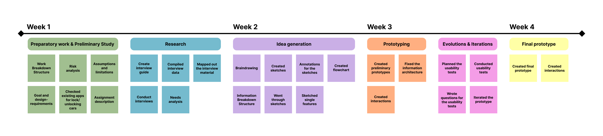
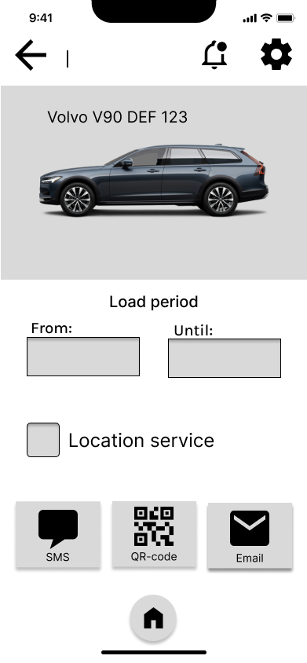
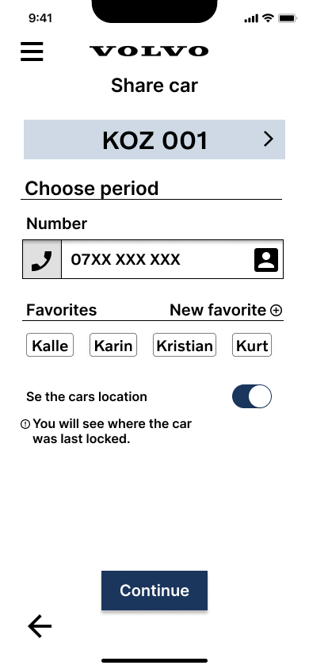
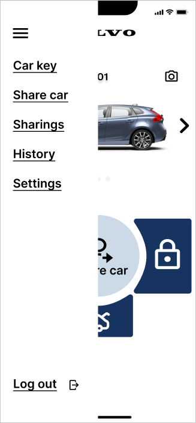
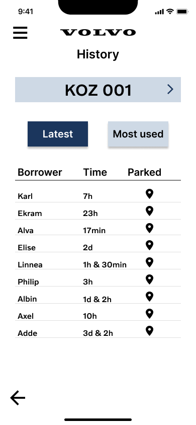

Lock App: Volvo Cars
Designstudio, Maj 2023, UX/UI-design
My Role: Visual Designer
Project Owner: Volvo Cars
Tools: Figma, Miro
Description of the Project
In this design studio, my group was given a brief by Volvo Cars. The group reviewed the brief and identified design problems, design-requirements, challenges and the goal of the project. The task was to design and prototype a digital interface for an app that supports locking and unlocking a car from a mobile app. The task was also to base the content in the app on research and the given design-requirements.
Design Process
1. Preliminary Studies, Preparatory work & Analyzing Brief
The project group began by analyzing the assigned brief, conducting desktop research and gaining domain knowledge. We reviewed existing apps for locking and unlocking cars to understand which features are commonly included and how these apps present their functions. By doing this, we were able to identify our target audience. The target group we identified is car owners and people with driver licenses without a car, who’re open to lend cars.
2. Research
Interviews
We contacted several car owners and people with driver licenses without cars, and scheduled interviews. Two semi-structured interview guides was created, one for car owners and one for people with driver licenses. We recorded the interviews so that we could revisit them later to ensure we captured all information. After each interview, the project team discussed whether we were satisfied with the responses or if we needed to adjust the interview guide.
Compile Interview Results
After each interview, the recorded material was transcribed. We compiled the interviews into an affinity diagram, where we created categories. The categories and material was sorted based on the questions asked during the interviews.
Research Summary
Contact Information: The owner wants access to the lenders phone number or SMS contact.
Mileage: Feature that shows how far the car has been driven when it was lent out.
Time Limit: A person should be allowed to lend the car for a maximum of two days.
Lending to family and friends: The car owner prefers to lend the car to family, friends, and in some cases, coworkers.
Other lenders: The owner may consider lending the car to strangers under special circumstances.
Required information: Name and phone number for people they trust. Address, drivers license and personal number for strangers.
Lending history: Useful if the owner lends to many people or strangers. For lends to family and friends, this is less important.
GDPR compliance: The car owner should follow GDPR regulations when handling personal data.
Key functionality: The app should be as convenient as using a physical car key with a locking/unlocking function.
3. Idea Generation
Sketches
The project team started to sketch the key features. The purpose of the sketching phase was to consolidate the group's various visions of the concept. These visions were based on the compiled responses from the interviews. We conducted a braindrawing session to generate multiple sketches that could later be developed further.


Wireframes
Wireframes were used to develop design solutions and allow iteration. This approach helped us avoid focusing on a final prototype before ensuring the design decisions were user-friendly. We developed wireframes in low and mid-fidelity to begin with. The wireframes were iterated several times to ensure that all features were incorporated and that the information architecture was logical.

→

→

Method
To accomplish an effective idea generation, we used a brainstorming method. This method helped us to think outside the box and therefore come with new and innovative ideas. The brainstorming method we used is called brainwriting 6-3-5.
4. Prototyping
After the idea generation, we created a fully functional prototype for us to use during the evaluations. The prototype wasn’t fully developed to high-fidelity, since we wanted our test-persons to focus on the features and information architecture in the prototype instead of visual things.
5. Evaluations & Iterations
Evaluations
During the design process, we conducted evaluations in the form of usability tests to ensure the interface was understandable for users. We reached out to several users and scheduled evaluation sessions. Special tasks were identified for the users to complete during the usability tests. These tasks were focused on parts of the prototype that we were uncertain about in terms of ease of navigation and understanding. We prepared a set of questions to ask the participants after the usability test to gather insights on aspects of the prototype.
Iterations
Based on the feedback we received during evaluations, we iterated our prototype. Whenever we discovered that something in the prototype lacked, we revised it according to the feedback to ensure the prototype was user-friendly. These iterations were crucial to our final product, as we revised it several times before finalizing it, resulting in the best possible version of the prototype. Below is an example:
→

→
→
6. Final Prototype
After we could ensure usability in the prototype through evaluations, we created the final high-fidelity prototype. The prototype was based on the completed wireframes. We added interactions to the prototype to make it as realistic as possible, allowing Volvo to gain a clear understanding of how the app's flow works and to see a clear picture of our results.
Result: Design Solutions
Share Car
A key feature. We found through research that most users only want to lend their car to family and friends. Therefore, the interface was designed to include a favorites list and a button linked to the phone’s contact book.
{kind=link}
Location Service
Car owners wanted to track the car’s location if they were lending it to someone they didn't know. Those lending the car preferred not to be tracked. A feature that allows the lender to accept or decline the offer was implemented.

Temporary and Indefinite Lending
Research showed that users often lend their cars to family members. To avoid the need to send a new sharing request each time the person wants to lend the car, a feature that allows users to share the car indefinitely was added.

Sharing Options: SMS & QR-Code
We digitalized the physical key-handover by QR-code sharing. The SMS option was implemented to make it user-friendly. The lender doesn’t need an account or meet the car owner in person.
{kind=link}
Customization for Lender
Two separate interfaces were designed, one for car owners and one for lenders. Features like history and car-sharing are not included for lenders. Users who lend cars mentioned that they don't want to create an account.

Digital Car Key
Research showed that the app should work as a traditional car key. The buttons in the app were placed similarly to a car key. Users can lock, unlock, and open the trunk in the app. Users should not lose any functions.

Menu
We chose to create a side menu for the app. The functions did not become too deep and the information architecture became logical, based on user evaluations. The side menu opens up possibilities for future development.
{kind=link}
History & Privacy
The history features are, seeing who has used the car most, viewing where the car was last parked, adjust lend times and indefinite lends and the option to cancel or extend a sharing arrangement.
{kind=link}
Security
To ensure high security, we implemented Face-ID for critical actions like locking, unlocking and sharing. Face-ID can’t be turned off since it provides security. If Face-ID isn’t used or doesn’t work, the phone's pin-code can be entered.

Insights
- Communication with the project owner: I learned about the importance of having good a communication with the project owner.
- Motivate all design choices: I realized that I always will have to be able to motivate all design choices based on research.
- Information architecture: I learned about the importance of information architecture. It determines the flow in the application and therefore, the usability.
- Design for users: I realized that it’s important to design for the users and not for anyone else.
- Iteration & Evaluations: I noticed the value of iteration and evaluations. Data from evaluations can easily help to iterate prototypes and make them more user-friendly.
- Iterate interview guides: I learned that it’s a normal to iterate interview-guides, since interviews create new knowledge in turn which could generate more questions.